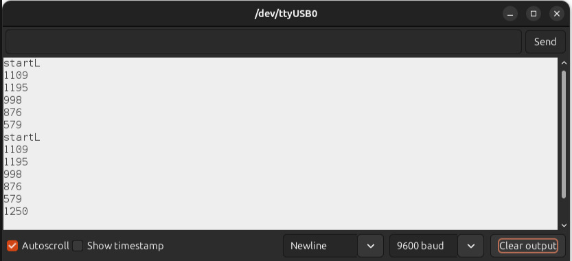
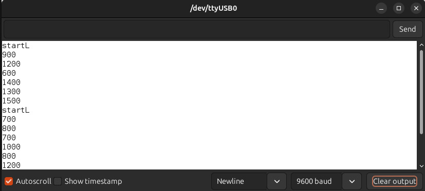

soph week 5/12 - 5/16
wanted to further simplify my code, even though it was already pretty simplified. also added a few things.
directional movement changes
previously, my code looked like this.
void forward() {
digitalWrite(MOTOR_A1, HIGH); digitalWrite(MOTOR_B1, HIGH); digitalWrite(MOTOR_A2, LOW); digitalWrite(MOTOR_B2, LOW);
}
void right() {
digitalWrite(MOTOR_A1, HIGH); digitalWrite(MOTOR_B1, LOW); digitalWrite(MOTOR_A2, LOW); digitalWrite(MOTOR_B2, LOW);
}
void sstop() {
digitalWrite(MOTOR_A1, LOW); digitalWrite(MOTOR_B1, LOW); digitalWrite(MOTOR_A2, LOW); digitalWrite(MOTOR_B2, LOW);
}
void left() {
digitalWrite(MOTOR_A1, LOW); digitalWrite(MOTOR_B1, HIGH); digitalWrite(MOTOR_A2, LOW); digitalWrite(MOTOR_B2, LOW);
}
while there is nothing wrong with this, it was quite cluttered with all the digitalwrites, so i decided to simplify it.
using a function to control the motors, i was able to set a value (high or low) to each motor without having to continuously write “digitalwrite(motor____, high/low).
void controlMotors(int a1, int a2, int b1, int b2) {
digitalWrite(MOTOR_A1, a1);
digitalWrite(MOTOR_A2, a2);
digitalWrite(MOTOR_B1, b1);
digitalWrite(MOTOR_B2, b2);
}
with this, i could just set low or high for each state
void forward() {
controlMotors(LOW, HIGH, LOW, HIGH);
}
void right() {
controlMotors(HIGH, LOW, LOW, HIGH);
}
void sstop() {
controlMotors(LOW, LOW, LOW, LOW);
}
void left() {
controlMotors(LOW, HIGH, HIGH, LOW);
}
void backwards() {
controlMotors(HIGH, LOW, HIGH, LOW);
}
in addition, i got rid of my old star function and “startR” function as the right button for some reason didn’t work. (probably cause i wired it wrong on my pcb).
button changes
since the right button was always “on” for some reason, i decided that it wasn’t necessary, and just removed it. also, since my code for the buttons was all over the place, i decided to consolidate it into a single function.
void buttonhandling() {
if (digitalRead(BUTTON_L) == LOW) {
can_start = false;
Serial.println("startL");
startL();
}
}
this keeps the same idea and attack pattern of the button, but consolidated.
sensor changes
with my old code, when the sensors got activated, the motors moved backwards for a set amount of time. however, it sometimes wouldn’t be enough time, and would end up moving forward too early / turning too early.
to fix this, we used a while loop and waited an extra second before starting the turn. in addition, more functions were created to further neaten up the code.
old:
void sensorhandling() {
// NC pin. HIGH PUSHED, LOW NOT PUSHED
if (digitalRead(SEN_L) == HIGH && digitalRead(SEN_R) == HIGH) {
backwards();
}
else if (digitalRead(SEN_R) == LOW && digitalRead(SEN_L) == HIGH) {
backwards();
delay(300);
right();
Serial.println("turn right");
delay(200);
}
else if (digitalRead(SEN_L) == LOW && digitalRead(SEN_R) == HIGH) {
backwards();
delay(300);
left();
Serial.println("turn left");
delay(200);
}
else {
forward();
Serial.println("forward");
delay(500);
}
}
new:
void sensorhandling() {
// NC pin. HIGH PUSHED, LOW NOT PUSHED
if (digitalRead(SEN_L) == HIGH && digitalRead(SEN_R) == HIGH) {
backwards();
}
else if (digitalRead(SEN_R) == LOW && digitalRead(SEN_L) == HIGH) {
while(digitalRead(SEN_R) == LOW && digitalRead(SEN_L) == HIGH) {
backwards();
}
delay(1000);
turnRandom(left);
}
else if (digitalRead(SEN_L) == LOW && digitalRead(SEN_R) == HIGH) {
while (digitalRead(SEN_L) == LOW && digitalRead(SEN_R) == HIGH) {
backwards()
}
delay(1000);
turnRandom(right);
}
else {
forward();
}
}
with all of these coding changes, my setup and loop was simplified drastically, now looking like this:
void setup() {
Serial.begin(9600);
pinMode(MOTOR_A1, OUTPUT); pinMode(MOTOR_A2, OUTPUT); pinMode(MOTOR_B1, OUTPUT); pinMode(MOTOR_B2, OUTPUT);
pinMode(SEN_L, INPUT_PULLUP); pinMode(SEN_R, INPUT_PULLUP);
pinMode(BUTTON_L, INPUT_PULLUP); pinMode(BUTTON_R, INPUT_PULLUP);
}
void loop() {
if (can_start) {
buttonhandling();
}
if (!can_start) {
sensorhandling();
}
}
testing shenanigans
we finally decided to get our sumobot assembled and i could finally test my code just to find some problems while testing. we encountered quite a bit of problems that we had to fix.
however, if anyone saw my pcb schematic that i made for the sumobot, you may have noticed that i don’t have a common ground.
pcb problem
well, we all didn’t notice this until we started to test the sumobot where we saw that the sumobot only got power when the lever roller switches weren’t pressed down for some reason. despite this, it worked to some degree for some reason (probably using a digital pin on the metromini as ground?)
after some re-looking on the pcb document, we noticed this problem. however, rather than re-milling a pcb, we decided to just make a new trace for ground.

with this fixed, we started testing again.
minor setback
one of the main issues that we wanted to address was the lack of turning by the sumobot. while this was a quick fix of changing the delays to allow the backwards(); function to further back up, i accidentally broke one of the two sumobots.
for some reason, i just forgot to react or protect the bot in case it fell of the table, and it ended up falling off the table.
while this was easily fixed by reprinting the base and re-cutting the acrylic piece, it was a minor setback, and i started testing code on the second sumobot that miles made.
testing problems cont.
right away, we noticed that one of the major problems was that the robot when crossing the white line (as the lever rollers can’t detect color but rather when it isn’t pressed), it was unable to bring itself back up.
me and miles spent quite a while debugging possible fixes to this problem, some of which included: - increasing the amount of times moving backwards off the edge - implementing a “bunnyhop” mechanism where it “jumps”, detaching the switches from the edge. - adding a ramp to the sensors so it wouldn’t get caught on the edge.
while the first two mechanisms didn’t work, miles eventually noticed that due to the “90°” angle with the rollers, it wouldn’t get back up as it was stuck in a perpendicular angle from the edge and the roller. to fix this, he suggested making a ramp to put onto the sensors to prevent it from getting jammed.

cardboard ramps to prevent jamming on the edge
we decided to just use cardboard for a quick fix. combined with some hot glue, this ended up working amazingly.
finally, we wanted to not have a set amount of turning delay, as it led to predictable movements and the sumobot staying on one side of the arena.
turning fixes + problems
originally, i was going to use a random function to generate a random number for the delay value, something like this:
long x;
void setup() {
Serial.begin(9600);
}
void loop() {
randomSeed(micros());
x = random(500, 1501);
Serial.println(x);
delay(500);
}
however, while setting this up in the sumobot i realized that every time the sumobot was run, the same values were showing up.
startL indicates that it has been rerun, and you can see that the same values show up.
this was because i had the seed where the random numbers would come from in the setup, where it would only change if it was re-uploaded. to fix this, i moved it to when the button gets pressed, which led to randomness every time like i wanted.
different numbers... wow!
with all of this, i believe our sumobot is done. potentially gotta fix the problems where it gets stuck for a bit (if possible), but that’s all.
sumobot results
the orange bot (the one that miles claimed) got second, losing to tims and benji with their extremely fast, suicide bot.
while we are given an extra week to revamp and improve our bots (as a few didn’t work as intended), we likely won’t be continuing our bot, marking the end of this project..
long post. thanks for reading it if you did.